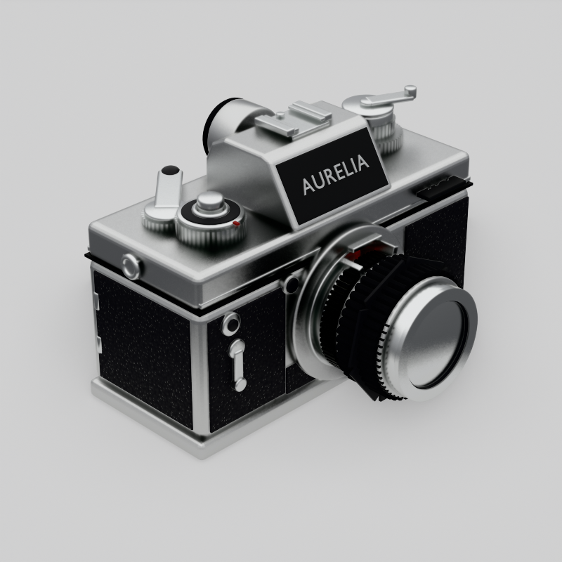
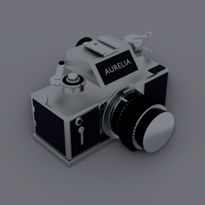
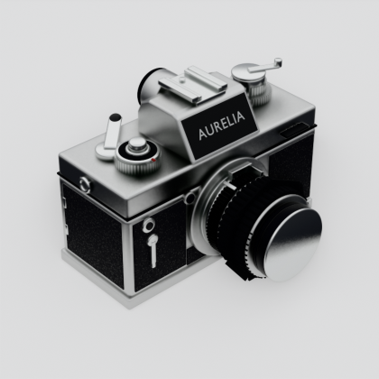
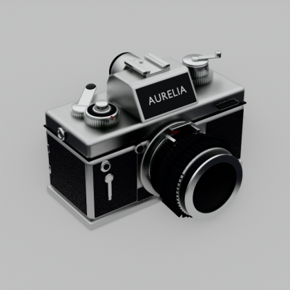
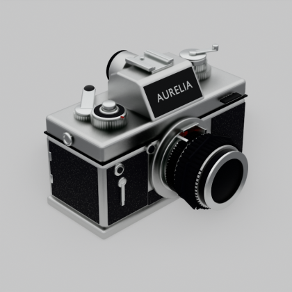
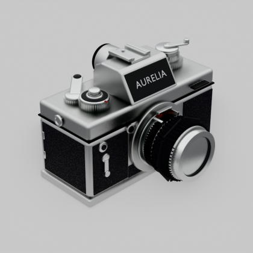
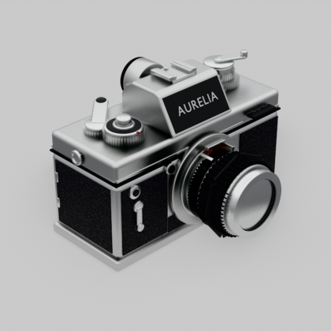
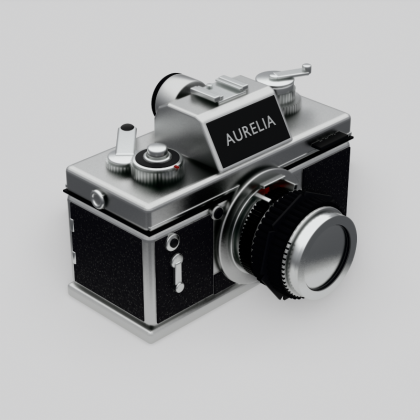

单张定稿：三分之四视角 · 主体占画幅 70.0% · 浅灰 #E8E8E8 无缝背景 · 柔和三点光 + 自然接触阴影

每轮先回看上轮出图再改脚本。前 5 轮主要在填硬性缺陷，v5 之后才转入外观打磨。







全部由脚本生成，无任何外部资产。以下几条是这轮里真正决定成败的地方。
DITHERED：use_raytrace_refraction 打开后能透过前镜片看到内部折射畸变；一旦改成 BLENDED，玻璃立刻退化成一块平板灰。Generated.Z → ColorRamp 的摄影棚梯度（顶部亮带 + 中灰地平线 + 下半球不能纯黑），金属与玻璃才会真正「活」起来。MixShader(Emission(#E8E8E8), Diffuse)：恒定发光保证背景绝对平整无渐变，漫反射项被主体遮挡后自然形成柔和的接触阴影。bpy.data.images.load(png).pixels 读出的是线性值，#E8E8E8 对应线性 0.8079，采样四角比对后调发光强度即可锁定。knurl() 逐齿生成的梯形齿廓星形截面环，不是法线贴图，侧光下会走出真实的高光齿列。use_clamp_overlap（不是 clamp_overlap）；按角度平滑用 bpy.ops.object.shade_auto_smooth()；Principled 的透射输入名已改为 Transmission Weight。recalc_face_normals，否则玻璃法线翻转会直接毁掉折射。| 相机视角 | 三分之四视角，方位角 −45°、仰角 29°，等效 105mm，主体占画幅 70.0%（由 world_to_camera_view 迭代自动构图锁定） |
|---|---|
| 渲染 | Eevee · 800×800 PNG · 256 spp · 光线追踪 + Fast GI |
| 机身 | 142 × 60 × 72.5 mm，银色顶盖 / 底盖 + 黑色荔枝纹皮革，顶盖带 0.7mm 台阶与抛光肩棱线 |
| 镜头 | 50mm f/1.8 风格，43mm 卡口向外扩至 49mm；滚花对焦环与光圈环、pre-AI 兔耳联动爪、光圈与距离刻度、7 片光圈叶片、三层镜片组（前组为真折射玻璃 + 430nm 单层镀膜薄膜干涉） |
| 结构细节 | 五棱镜与坡面铭牌、热靴、圆目镜 + 橡胶眼罩、快门速度盘 + 快门钮、过片扳手（带滚花轴环）、卷片旋钮 + 折叠摇柄、帧计数器窗、PC 同步口、自拍杆、景深预览钮、背带环、三脚架螺丝、后背胶片盒提示框 |
| 材质 | 全部程序化节点：Voronoi 卵石皮革凹凸、双向拉伸噪声金属拉丝、Feather 玻璃（IOR 1.55 + Coat + 薄膜干涉） |
| 规模 | 125 个 mesh 对象 · 1 个脚本文件 1280 行 · 整体包围盒 0.148 × 0.110 × 0.101 m |
建模脚本与工程文件可直接下载复用。